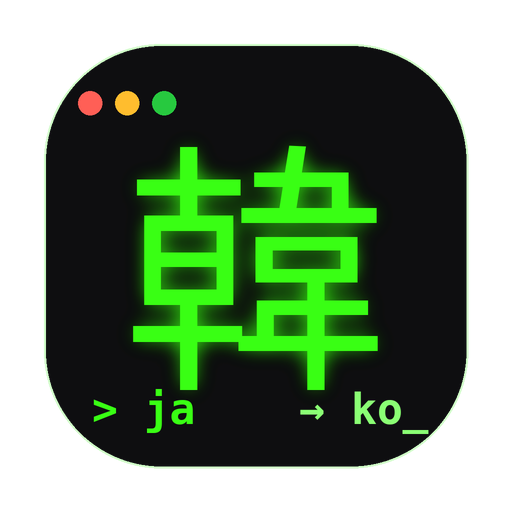

Mac のメニューバーに常駐する、日本語 ⇄ 韓国語の翻訳アプリ。
ネット検索で固有名詞まで正確に翻訳します。
macOS 13 (Ventura) 以降 / Apple Silicon・Intel 対応
KoreanTranslator.dmg を開くsk-ant-... を発行し、アプリの⚙設定に貼り付けターミナルで次を実行してください：
xattr -dr com.apple.quarantine /Applications/KoreanTranslator.app